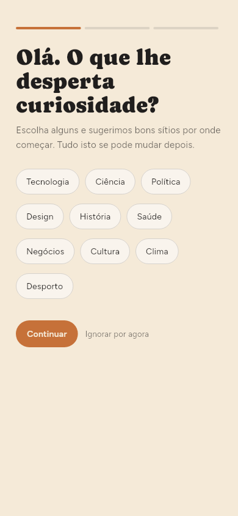
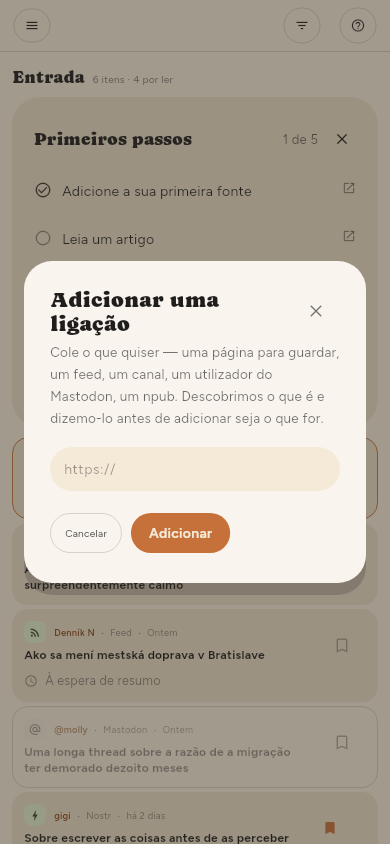
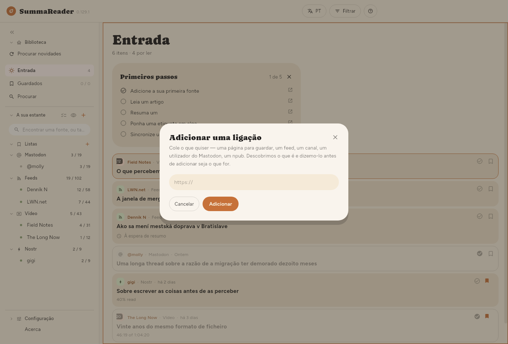
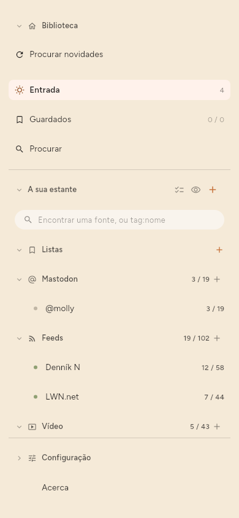
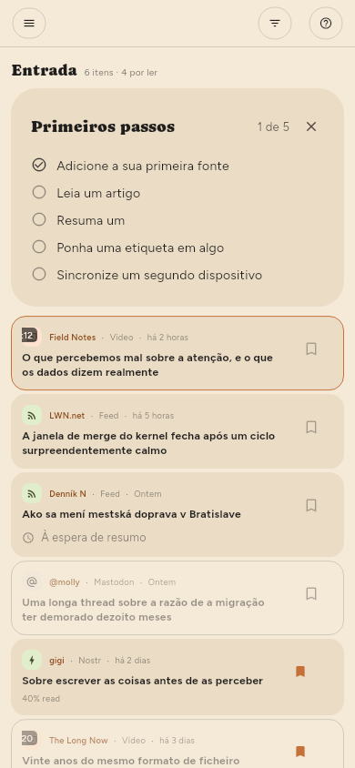
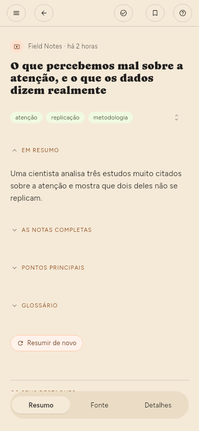
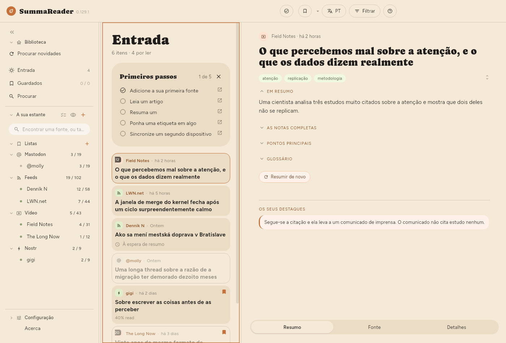
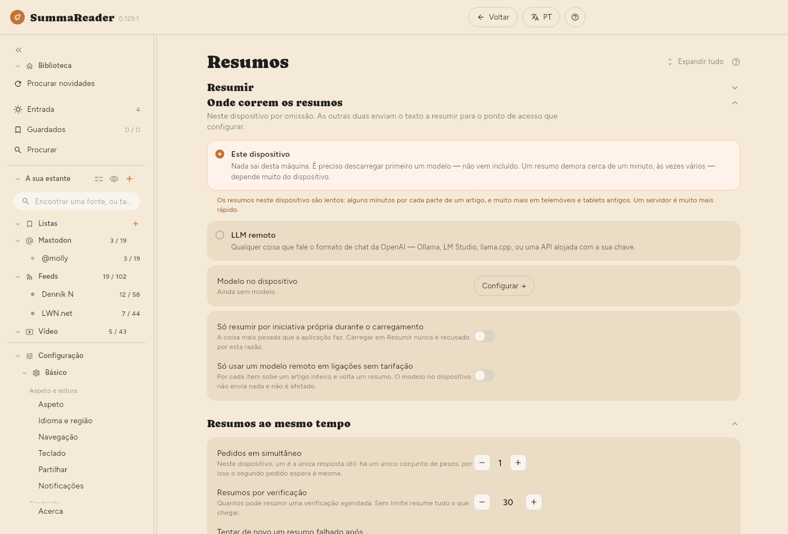
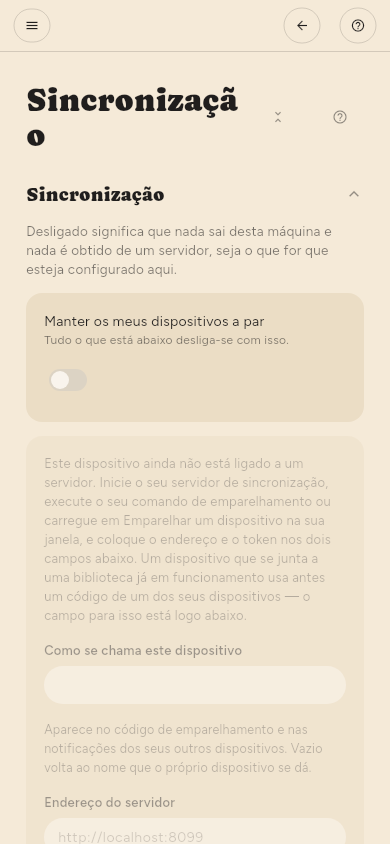
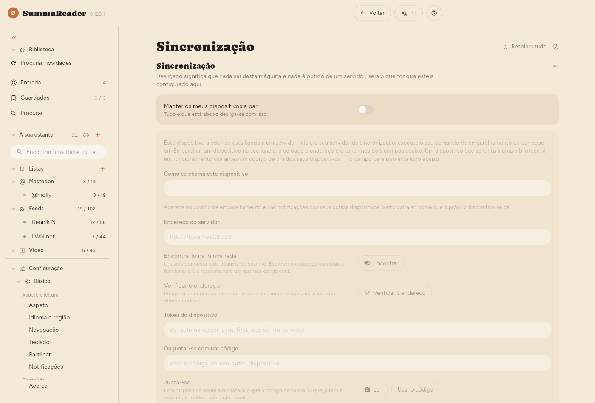

← Instalar · Índice · Para começar →
Passos iniciais
Estes passos são iguais num telemóvel e num computador, exceto onde um passo diz o contrário. A lista Primeiros passos no topo da Entrada segue os mesmos passos e marca cada um como feito. Toque num passo para abrir a sua parte deste guia. Prima × e depois Ocultar até ao próximo arranque ou Não mostrar de novo. Para a mostrar de novo: Configuração › Básico › Aspeto › Lista › Mostrar a lista Primeiros passos.
Num telemóvel, o ecrã é demasiado estreito para mostrar mais do que uma coisa de cada vez:
- A estante é a lista de tudo o que segue, mais Entrada, Guardados, Procurar e Configuração. Num telemóvel está escondida. Toque em ☰ no canto superior esquerdo para a abrir.
- Um artigo abre em ecrã inteiro. Toque em ← para voltar à lista.
- A Configuração está no fundo da estante. Toque nela, depois em Básico ou Avançado, e depois numa página.

Num computador, a estante está sempre à esquerda e um artigo abre ao lado da lista.
1. Adicione a sua primeira fonte
Uma fonte é tudo o que a aplicação segue por si: o feed de um site de notícias, um canal de vídeo, uma conta do Mastodon. Um feed é a lista de artigos novos que um site publica para programas como este.
Da primeira vez que abre a aplicação, ela pergunta o que lhe desperta curiosidade.
- Toque nos temas que lhe interessam e depois em Continuar.
- Toque numa fonte sugerida para a seguir, ou cole o endereço de um site ou de um canal na caixa e toque em Adicionar. Depois toque em Continuar.
- Selecione Resumir o que leio para deixar a aplicação escrever resumos, ou deixe por selecionar. Pode mudar isto mais tarde (passo 4).
- Toque em Começar a ler.
Para adicionar fontes mais tarde, toque em Ignorar por agora no primeiro ecrã.

Para adicionar uma fonte a qualquer momento:
- Abra a estante.
- Toque em + ao lado de A sua estante. Abre-se a caixa Adicionar uma ligação.
- Cole o endereço.
- Toque em Adicionar. Se o endereço for uma fonte — um feed, um canal ou um autor —, a caixa mostra em vez disso Seguir a fonte e Guardar a página. Toque na que pretende.
- Se o site oferecer uma escolha, selecione o feed ou a própria página. A aplicação marca uma das opções como recomendada.


2. Procure artigos novos
Quando toca em Começar a ler, a aplicação verifica uma vez as fontes que escolheu. Depois, uma instalação nova só verifica quando pede (veja o fim deste passo). Se Entrada mostrar Ainda nada obtido, toque em Procurar novidades nela. Para verificar já a qualquer momento:
- Abra a estante.
- Toque em Procurar novidades, por baixo de Biblioteca.
Os artigos novos vão para a Entrada.
Para parar uma verificação, toque em Parar na faixa de estado, em baixo. O botão passa a A parar…. Em cada fonte, a aplicação termina o artigo que está a ler. Não começa as fontes que esperam. Os artigos que já obteve ficam. A verificação seguinte começa pelas fontes que não terminou.

Para mudar a frequência com que a aplicação verifica: Configuração › Básico › Obtenção › Com que frequência procurar novidades. Só quando eu pedir desliga todas as verificações automáticas.
A primeira verificação traz os artigos que a fonte tem nesse momento. Não são novidade para si, por isso a aplicação não os resume automaticamente. Só resume os artigos que chegam depois de ter adicionado a fonte.
3. Leia um artigo
- Toque num artigo na Entrada.
- Leia-o. O artigo tem três separadores em baixo: Resumo, Fonte (o texto completo) e Detalhes.
- Num telemóvel, toque em ← para voltar à lista.



4. Ative os resumos e escolha onde correm
Um resumo é escrito por um modelo: um programa que lê o artigo e escreve uma versão curta dele. O modelo corre num de dois sítios.
- Este dispositivo — o modelo corre no seu telemóvel ou computador. Nada sai do dispositivo. Transfere o modelo uma vez. Os resumos neste dispositivo são lentos: alguns minutos por cada parte de um artigo, e muito mais em telemóveis e tablets antigos.
- LLM remoto — o artigo vai para um servidor que corre o modelo: um gerido por si, ou um serviço pago. Um servidor é muito mais rápido. É a única altura em que o texto de um artigo sai do seu dispositivo.
Para configurar:
- Abra Configuração › Básico › Resumos › Resumir › Resumo e confirme que está ativo.
- Em Configuração › Básico › Resumos › Onde correm os resumos, selecione Este dispositivo ou LLM remoto. Da primeira vez que seleciona Este dispositivo, a aplicação avisa que aqui os resumos são lentos. Os resumos continuam em segundo plano enquanto lê.
- Para Este dispositivo: abra Configuração › Avançado › Modelo no dispositivo › Encontrar um modelo, pesquise e transfira um modelo. Depois, em Configuração › Avançado › Modelo no dispositivo › Modelos neste dispositivo, toque em Iniciar ao lado dele.
- Para LLM remoto: abra Configuração › Avançado › Servidor LLM › Servidor LLM. Preencha Endereço, Modelo e, se o servidor pedir, a chave de API. Toque em Testar.
- Abra um artigo e toque em Resumir.


Na Premium, a aplicação também pode resumir automaticamente os artigos novos, depois de cada verificação. Ative Resumir nas definições de uma fonte (ver Gerir fontes).
5. Ponha uma etiqueta em algo e guarde-o numa lista (só Premium)
As etiquetas e as listas fazem parte da Premium.
Uma etiqueta é uma palavra que põe num artigo ou numa fonte, por exemplo linux. O resumo sugere etiquetas.
- Abra um artigo.
- Por baixo do título, toque numa etiqueta sugerida para a aceitar, ou toque no lápis (Editar etiquetas) para escrever as suas.
Uma lista junta artigos. Guardados é a primeira lista.
- Abra um artigo.
- Toque no marcador no topo para o guardar na lista atual.
- Para usar outra lista, mantenha o marcador premido e depois selecione uma lista ou crie uma nova.
6. Emparelhe um segundo dispositivo
A sincronização mantém os seus dispositivos a par: o que leu, o que guardou e os próprios artigos. Precisa de um servidor de sincronização gerido por si. O servidor só guarda dados cifrados e não consegue ler a sua biblioteca.
Descarregue o servidor da sua página de versões; Obter o servidor diz que ficheiro escolher.
No primeiro dispositivo:
- Abra Configuração › Avançado › Sincronização › Sincronização.
- Ative Manter os meus dispositivos a par.
- Preencha Endereço do servidor e Token do dispositivo. O servidor dá-lhe os dois.
- Em Configuração › Avançado › Sincronização › Outro dispositivo, toque em Criar um código. A aplicação mostra um código QR e o mesmo código em texto.
No segundo dispositivo:
- Instale a aplicação e abra Configuração › Avançado › Sincronização › Sincronização.
- Ative Manter os meus dispositivos a par.
- Por baixo de Ou juntar-se com um código, toque em Ler e aponte a câmara para o código QR. Num dispositivo sem câmara, cole o código em texto no campo. No Linux, uma webcam pode ler o código.
- Toque em Usar o código.
O código transporta a chave da sua biblioteca. Mostre-o apenas ao seu próprio dispositivo e feche-o quando terminar.


7. Crie o código de recuperação
O código de recuperação é a única forma de voltar a entrar na sua biblioteca se perder todos os dispositivos emparelhados. Ninguém o pode voltar a criar por si.
- Abra Configuração › Avançado › Sincronização › Chave de recuperação › Código de recuperação.
- Toque em Criar.
- Anote o código. Guarde-o num sítio a que continue a ter acesso se este dispositivo desaparecer. A aplicação mostra-o uma vez e não guarda cópia.